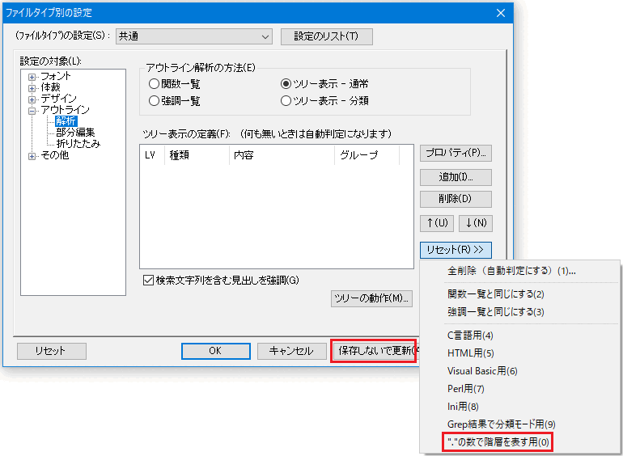
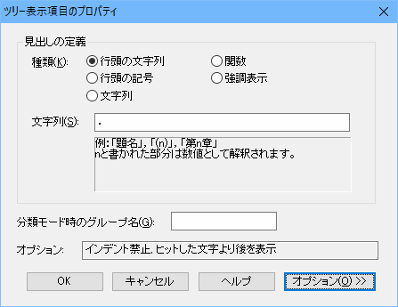
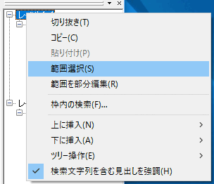

[解説]
「アウトライン解析の枠」に各種項目を表示するには、設定が必要です。
- 「ツリー表示」の「通常」や「分類」では、ツリーのレベルや、分類を設定します。
「強調表示一覧」では、ファイルタイプ別で設定する強調表示の設定を使用します。

「関数一覧」では、秀丸エディタがファイルを解析し、関数の一覧を自動的に表示します。 現状では「言語」の内容は、「C言語/Java等」のみしか選ぶことができません。 「C言語/Java等」の場合、以下の言語に対応しています。
- C
- C++
- Java
- JavaScript
- C#
- Objective-C
- go言語
とりあえず使ってみよう
「アウトライン解析の枠」にどの様に表示されるかを見るため、内蔵されている設定を使ってみます。
メニューの「その他」-「ファイルタイプ別の設定」でダイアログを表示させ、 「設定の対象」-「アウトライン」-「解析」を選択し、「アウトライン解析の方法」を「ツリー表示-通常」を選択します。

「リセット」を押すと表示されるメニューから、「“.”の数で階層を表す用」を選ぶと、 「ツリー表示の定義」が以下のように設定されます。
一時的な設定にするため「保存しないで更新」を押して、「ファイルタイプ別の設定」を閉じ、 以下の内容をコピーして、設定した秀丸エディタに貼り付けます。
.レベル1-1
表題-１
..レベル2-1
章-1
...レベル3-1
節-1
....レベル4-1
項-1
.....レベル5-1
段落-1
......レベル6-1
その他-1
.レベル1-2
表題-2
..レベル2-2
章-2
...レベル3-2
節-2
....レベル4-2
項-2
.....レベル5-2
段落-2
......レベル6-2
その他-2設定内容に従い「アウトライン解析の枠」にツリー状の構成が表示されます。
簡単ですが、「アウトライン解析の枠」の「ツリー表示」の例になります。 「アウトライン解析の枠」の各項目をクリックすると、その行にカーソルが移動したり、 各項目内をすべて範囲選択する等、操作が可能になります。(例は1行なのであまり意味は無いですが・・・。)
アウトライン解析のツリー設定を行うと、「折りたたみ」、「見出し」、「部分編集」も可能になりますが、 ここでは説明を行わずに、別途説明があるので、「アウトラインに関連する機能」を参照の事。
設定を変更してみよう
「ツリー表示の定義」の設定について、解説します。
まず、「ツリー表示の定義」の「レベル1」を選択し「プロパティ」を押して、設定画面を表示させます。

初期状態は、「オプション」が閉じられた状態で表示されますが、「オプション」ボタンを押す事で、 オプション設定部分の表示/非表示を切り替える事が出来ます。


見出しの定義
- 「行頭の文字列」
行頭にある指定された文字列を見出しとして解釈します。
文字列内の“n”は、数値として解釈されます。
(n) --> (1)、(10)、(100) 第n章 --> 第1章、第10章、第100章 n.n --> 1.2、2.1、3.4- 「行頭の記号」
設定した文字集合のいずれかを見出しとして解釈します。
#%& --> # or % or &レベルの操作を行った場合は、先頭の文字を使います。
- 「文字列」
設定した文字列を見出しとして解釈します。 文字列は正規表現も指定可能です。(正規表現をONにしてください。)

- 「関数」
- 関数を見出しとして解釈します。 対応する言語は、関数一覧と同じになります。
- 「強調表示」
強調表示されている行を関数を見出しとして解釈します。
オプションの説明
- 「インデント禁止」
「行頭の文字列」と「行頭の記号」のみに設定可能な項目。 見出しに設定した文字列/記号の前に、タブ文字や、空白文字を認めるかどうかです。
例)OFFの場合は、「レベル1-3」を見出しと認識する。(ONの場合は認識しない。)

- 「インデントの深さでレベルを決める」
前の見出しとの比べて、インデントが深ければ１つ下のレベルになります。
「ツリー表示の定義」の「レベルの見せ方」が「絶対的」になっていると、この指定は無効です。
実際に設定してみます。「追加」ボタンを押して、現状の設定に以下の内容を追加します。
一時的な設定にするため「保存しないで更新」を押して、閉じます。
「レベル2-1」に以下の内容を追加します
- aaaa * bbbb
「レベルの見せ方」が「絶対的」になっている為、レベル7の見出しとして認識されます。 ここで設定を「絶対的」から「相対的」に変更します。「ツリー表示の定義」画面にある「ツリーの動作」をクリックすると、設定画面が開きます。

ここで、レベルの見せ方を、「相対的」に変更します。
一時的な設定にするため「保存しないで更新」を押して、閉じます。
「絶対的」な場合と表示状態が変化しましたが、これは直ぐ上の見出しとレベルの比較を行い、 レベルが低ければ「下位レベル」と判断している(レベル7とは認識しない)からです。 さらに、“bbbb” は、“aaaa” より、インデントが深くなっている為、さらに下位と判断されます。やっと、オプションの説明になります。
ONの場合認識
├レベル2-1 │└aaaa レベル2より低いレベルなので1段下げ │ └bbbb インデントの深さより、"aaaa" より低いレベルなので1段下げOFFの場合認識
├レベル2-1 │├aaaa レベル2より低いレベルなので1段下げ │└bbbb インデントの深さは関係ないので、"aaaa" と同じレベルこのチェックがONの場合、インデントだけで、レベルを決める事が出来ます。
- 「一つ上のツリー定義と同じレベルとして定義」
「追加」していくと、上のレベルから順番に定義されていきます。 「インデントの深さでレベルを決める」の説明で追加した項目は、「レベル7」になっています。

このオプションを「ON」にすると、「一つ上のツリー定義と同じレベル」になります。 この場合は、「レベル6」。“LV”の項目が空白なのは、一つ上と同じという意味。

通常は、「一つのレベルに対し定義は1個」という状態ですが、このチェックをONにする事で、 「一つのレベルに対し定義を複数個」設定する事が出来ます。
- 「コメントを無視」
- 「ファイルタイプ別の設定」-「デザイン」で、「コメント」と認識している箇所を、 見出しと認識させたくない場合は、「ON」にしてください。
- 「文字定数を無視」
- 「ファイルタイプ別の設定」-「デザイン」で、「文字定数」と認識している箇所を、 見出しと認識させたくない場合は、「ON」にしてください。
- 「展開/折りたたみ状態」
ツリー表示の状態を設定します
- 標準
子があるときは初期状態で展開し、手動で折り畳みも可能。 - 初期状態でツリーを折りたたみ
最初に表示する場合は、ツリーを折りたんだ状態にする。 - 展開したままで固定
子があるときに[+]/[-]マークなどは表示せずに、常に展開された状態。
- 標準
- 「表示範囲」
見出しを表示する範囲を決めます。
以下の場合に適用されます。
- 「アウトライン解析の枠」
- 「アウトライン解析…」のダイアログ
- 「見出しバー」
以下の選択ができます。
- 自動
- ヒットした文字以降

- ヒットした文字より後

- ヒットした文字のみ

- 行全体
(この例では「ヒットした文字以降」と同じ) - 次の行全体

- 「自動的な選択/部分編集の対象」
ONの場合、以下の状態に影響があります。
- 「部分編集」コマンドを実行したとき、自動的に部分編集となる範囲の境界となる見出しかどうか
- 「折りたたみ用の余白」で大きな[+]/[-]マークとして表示され、折りたたみの対象となるかどうか
- 「次の見出し」「前の見出し」コマンドでジャンプする対象となるかどうか
- 「見出しバーに表示する対象」
- OFFにすると、見出しバーに表示しないようになります。
- 「行番号表示」
- 見出しに行番号も表示する/しないの設定です。
ツリー表示の分類について
「分類モード時のグループ名」を入力しておくと、「ツリー表示-分類」が使用できます。
現状の設定にグループ名を追加してみます。

「ツリー表示-分類」に変更すると、表示が以下のように、設定したグループ名毎になります。

ツリーの操作
「アウトライン解析の枠」で、見出しの項目を選択すると、右クリックメニューでツリーの単位の操作が可能です。

例えば「切り抜き」ですが、選択した見出し下にあるツリーも対象になります。
実行前├レベル1-1
│└レベル2-1
│ └レベル3-1 <----ここを選択し、「切り抜き」を実行すると下のツリーも対象になる。
│ └レベル4-1
│ └レベル5-1
│ └レベル6-1
├レベル1-2├レベル1-1
│└レベル2-1
├レベル1-2「コピー」や「範囲選択」も同様に、ツリー構造になっている場合は、選択以下のツリーも対象になります。
「上に挿入」/「下に挿入」は、選択した見出しの上か下に、指定したレベルの見出しを追加可能です。
「ツリー操作」では、見出しのレベル上げたり、下げたりも可能です。 「ツリーそのものをコピー」では「アウトライン解析の枠」の内容をクリップボードにコピーします。 ツリーの場合は罫線(?)ではなく、レベルの数だけTABコード(0x09)が入ります。
アウトラインに関連する機能
アウトライン解析に関連する機能として以下の機能があります
- 見出し
- 折りたたみ
- 部分編集
標準では非表示になっていて、表示するには以下の “>>” を押す事で表示可能です。

もう一度 “>>” を押す事で非表示になります。

- 見出しバー
カーソルが今どこにあるかを表示します。設定により表示しない事も可能です。 (「見出しバーに表示する対象」)

見出しバーの矢印を押す事で、見出しの移動が可能です。

- 折りたたみ
エディタ上の本文を、見出し単位で折りたたむ事が出来ます。 折りたたみ可能な箇所は、
 で示されます。
で示されます。
「レベル3-3」で折りたたむと、それ以下のレベルまで折りたたまれます。 をクリックすると展開されます。
をクリックすると展開されます。
アウトラインの見出しだけではなく、選択範囲を折りたたむ事も可能です。 「見出し」ではないので、マーカーが異なります。

範囲選択すると範囲を示すマーカーが出るので、クリックすると折りたたまれます。
- 部分編集
エディタ上の本文を、見出し単位で部分編集状態にする事が出来ます。 部分編集になると、グレーアウトされた箇所は編集できません。
部分編集可能な箇所は、
で示され、 範囲は点線で示されます。
「レベル3-1」にカーソルがある状態で、見出しバーにある をクリックすると 部分編集モードになります。
をクリックすると 部分編集モードになります。
折りたたみと同様に、選択範囲を部分編集にする事も可能です。